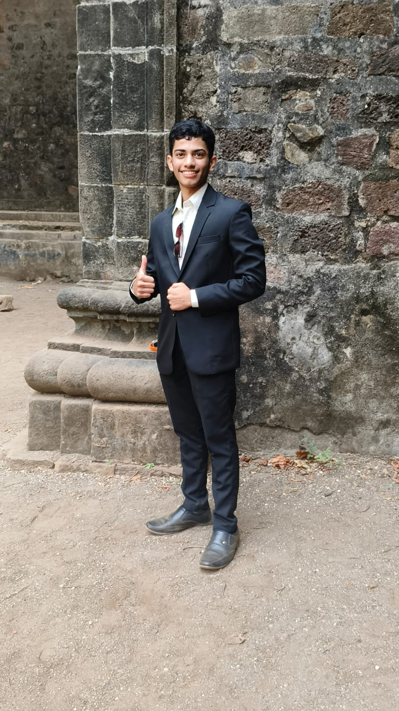

Welcome to My Portfolio
Hello! I'm Martin Godad, an aspiring developer passionate about technology, programming and continuous learning.
I am currently pursuing my Bachelor's degree in Information Technology. I enjoy exploring new technologies, developing practical projects and improving my problem-solving skills.
My goal is to turn my knowledge into real-world solutions and grow into a skilled technology professional.
About Me
I am a B.Sc. Information Technology student at Jai Hind College, interested in software development and data science.
I believe in learning by doing. I enjoy understanding how things work, experimenting with code and building projects that help me apply what I learn.
Currently, I am strengthening my web development fundamentals through HTML, CSS and JavaScript while exploring programming, databases and software development concepts.
I am always open to learning opportunities, collaboration and experiences that help me grow professionally.
Education
Bachelor of Science in Information Technology
College: Jai Hind College
Current Level: Second Year – B.Sc. IT
Areas of Study: Programming, Data Structures, Computer Networks, Database Concepts and Web Technologies.
My Career Goals
I want to build a strong foundation in technology and gradually develop the skills required to work on real-world projects.
- Strengthen my programming and problem-solving fundamentals.
- Become confident in front-end web development using HTML, CSS and JavaScript.
- Learn backend development and understand how complete web applications work.
- Improve my knowledge of databases, SQL and data management.
- Explore data science, data analytics and practical applications of Python.
- Build meaningful projects and maintain a strong GitHub portfolio.
- Gain practical experience through internships and collaborative projects.
- Continuously improve my communication, teamwork and technical skills.
My Technical Skills
Technologies and tools I am learning and practising:
- HTML5 – Web Page Structure
- CSS3 – Styling and Responsive Design
- JavaScript – Currently Learning
- Python – Programming Fundamentals
- Java – Object-Oriented Programming
- SQL – Database Fundamentals
- Git & GitHub – Version Control Basics
- VS Code – Development Environment
Professional Skills
- Problem Solving
- Logical Thinking
- Continuous Learning
- Team Collaboration
- Time Management
My Projects
Here are the projects I am building as part of my web development learning journey and internship.
1. Personal Portfolio Website
A responsive personal portfolio website designed to introduce myself and showcase my education, technical skills, career goals and development journey.
Technologies: HTML5, CSS3
Status: Initial Version Completed
2. Landing Page
A modern and visually appealing landing page designed to demonstrate webpage layouts, structured sections, navigation, styling and responsive design.
Technologies: HTML5, CSS3
3. Calculator
An interactive calculator that performs basic arithmetic operations such as addition, subtraction, multiplication and division through a simple user interface.
Technologies: HTML5, CSS3, JavaScript
My Profile

Get In Touch
Interested in connecting, collaborating or discussing technology? Feel free to contact me.
Contact Me